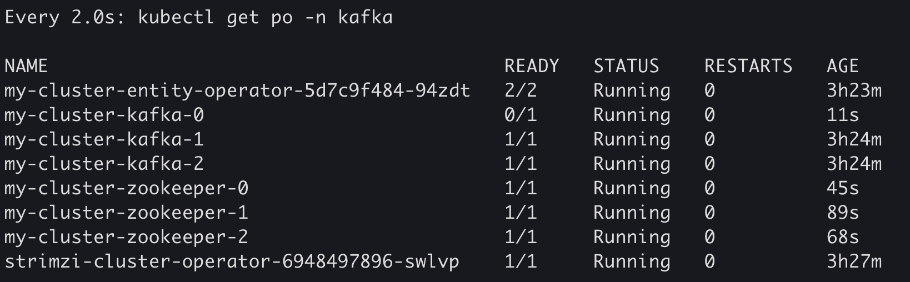
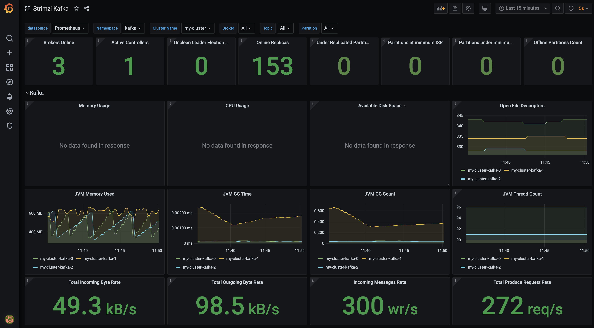

Kafka Cluster install on Kubernetes and Monitoring with Grafana
With Kubernetes, Kafka clusters can be managed declaratively, reducing the operational overhead of setting up Kafka components and keeping them up-to-date. Kubernetes Operators like Strimzi automate complex tasks such as broker configuration, rolling upgrades, and scaling.
This tutorial walks through how to:
- Deploy a Kafka cluster within Kubernetes using Strimzi Kafka Operator
- Enable monitoring of usefull Kafka metrics with Prometheus and Grafana
Deploy Kafka on Kubernetes (using Minikube)
A new Minikube cluster
``` bash
$ minikube start -p kafka-cluster
😄 [kafka-cluster] minikube v1.33.1 on Darwin 14.5 (arm64)
✨ Using the docker driver based on existing profile
👍 Starting "kafka-cluster" primary control-plane node in "kafka-cluster" cluster
🚜 Pulling base image v0.0.44 ...
🔄 Restarting existing docker container for "kafka-cluster" ...
🐳 Preparing Kubernetes v1.30.0 on Docker 26.1.1 ...
🔎 Verifying Kubernetes components...
▪ Using image gcr.io/k8s-minikube/storage-provisioner:v5
🌟 Enabled addons: default-storageclass, storage-provisioner
🏄 Done! kubectl is now configured to use "kafka-cluster" cluster and "default" namespace by default
```
Infrastructure As Code with Terraform
To ease our deployment, we use Terraform as our Infrastructure As Code tool.
Note: on IaC If you’re not familiar with Terraform, don’t be scared, it is just an automation tool that uses code to declare infrastructures. Install Terraform on you machine and run the two terraform commands bellow in the same folder where you put the *.tf files. that’s it.
This Terraform code declares the necessary providers, and creates the namespaces before installing the “strimiz-cluster-operator” helm-chart:
# Initialize terraform providers
provider "kubernetes" {
config_path = "~/.kube/config"
}
provider "helm" {
kubernetes {
config_path = "~/.kube/config"
}
}
# Create a namespace for observability
resource "kubernetes_namespace" "kafka-namespace" {
metadata {
name = "kafka"
}
}
# Create a namespace for observability
resource "kubernetes_namespace" "observability-namespace" {
metadata {
name = "observability"
}
}
# Helm chart for Strimzi Kafka
resource "helm_release" "strimzi-cluster-operator" {
name = "strimzi-cluster-operator"
repository = "https://strimzi.io/charts/"
chart = "strimzi-kafka-operator"
version = "0.42.0"
namespace = kubernetes_namespace.kafka-namespace.metadata[0].name
depends_on = [kubernetes_namespace.kafka-namespace]
}
- Apply terraform script to create the namespace and install Strimzi Kafka Operator
- Apply kubernetes yamls to create kafka resources:
$ kubectl -n kafka get po
NAME READY STATUS RESTARTS AGE
strimzi-cluster-operator-6948497896-swlvp 1/1 Running 0 77s
Kafka Cluster with Strimzi
Now that our Strimzi-Kafka-Operator is up and running in our newly created Kubernetes cluster, we create the Kafka cluster by applying the following yaml file with the command :
apiVersion: kafka.strimzi.io/v1beta2
kind: Kafka
metadata:
name: my-cluster
spec:
kafka:
version: 3.7.1
replicas: 3
listeners:
- name: plain
port: 9092
type: internal
tls: false
- name: tls
port: 9093
type: internal
tls: true
config:
offsets.topic.replication.factor: 3
transaction.state.log.replication.factor: 3
transaction.state.log.min.isr: 2
default.replication.factor: 3
min.insync.replicas: 2
inter.broker.protocol.version: "3.7"
storage:
type: jbod
volumes:
- id: 0
type: persistent-claim
size: 100Gi
deleteClaim: false
zookeeper:
replicas: 3
storage:
type: persistent-claim
size: 100Gi
deleteClaim: false
entityOperator:
topicOperator: {}
userOperator: {}
That’s all that we need to deploy a fully operational Kafka cluster on Kubernetes.
In the kafka namespace, we see that our cluster is up and running and that we have 3 replicas of our cluster as well as 3 replicas of the zookeeper:
➜ $ kubectl -n kafka get po
NAME READY STATUS RESTARTS AGE
my-cluster-entity-operator-5d7c9f484-94zdt 2/2 Running 0 22s
my-cluster-kafka-0 1/1 Running 0 45s
my-cluster-kafka-1 1/1 Running 0 45s
my-cluster-kafka-2 1/1 Running 0 45s
my-cluster-zookeeper-0 1/1 Running 0 112s
my-cluster-zookeeper-1 1/1 Running 0 112s
my-cluster-zookeeper-2 1/1 Running 0 112s
strimzi-cluster-operator-6948497896-swlvp 1/1 Running 0 4m9s
To create Kafka entities (producers, consumers, topics), we use the Kubernetes CRD installed by the Strimzi Operator to do so.
For instance, we create a Kafka topic named my-topic by applying the following yaml code:
apiVersion: kafka.strimzi.io/v1beta2
kind: KafkaTopic
metadata:
name: my-topic
labels:
strimzi.io/cluster: my-cluster
spec:
partitions: 1
replicas: 1
config:
retention.ms: 7200000
segment.bytes: 1073741824
To produce some events to our topic, we run the following command:
echo "Hello KafkaOnKubernetes" | kubectl -n kafka exec -i my-cluster-kafka-0 -c kafka -- \
bin/kafka-console-producer.sh --broker-list localhost:9092 --topic my-topic
To test consuming this event, we run:
➜ kubectl -n kafka exec -i my-cluster-kafka-0 -c kafka -- bin/kafka-console-consumer.sh --bootstrap-server localhost:9092 --topic my-topic --from-beginning
Hello KafkaOnKubernetes
At this point, our Kafka cluster is up and running and we can already send and receive events between different microservices running within Kubernetes.
Monitoring our Kafka Cluster with Grafana
Collecting metrics is critical for understanding the health and performance of our Kafka cluster.
This is important to identify issues before they become critical and make informed decisions about resource allocation and capacity planning.
For this, we will use Prometheus and Grafana to monitor Strimzi.
Prometheus consumes metrics from the running pods in your cluster when configured with Prometheus rules. Grafana visualizes these metrics on dashboards, providing better interface for monitoring.
Setting-up Prometheus
To deploy the Prometheus Operator to our Kafka cluster, we apply the YAML bundle resources file from the Prometheus CoreOS repository:
curl -s https://raw.githubusercontent.com/coreos/prometheus-operator/master/bundle.yaml > prometheus-operator-deployment.yaml
Then we update the namespace with our observability namespace:
sed -i '' -e '/[[:space:]]*namespace: [a-zA-Z0-9-]*$/s/namespace:[[:space:]]*[a-zA-Z0-9-]*$/namespace: observability/' prometheus-operator-deployment.yaml
sed -E -i '/[[:space:]]*namespace: [a-zA-Z0-9-]*$/s/namespace:[[:space:]]*[a-zA-Z0-9-]*$/namespace: observability/' prometheus-operator-deployment.yaml
Then, deploy the Prometheus Operator:
kubectl -n observability create -f prometheus-operator-deployment.yaml
customresourcedefinition.apiextensions.k8s.io/alertmanagerconfigs.monitoring.coreos.com created
customresourcedefinition.apiextensions.k8s.io/alertmanagers.monitoring.coreos.com created
customresourcedefinition.apiextensions.k8s.io/podmonitors.monitoring.coreos.com created
customresourcedefinition.apiextensions.k8s.io/probes.monitoring.coreos.com created
customresourcedefinition.apiextensions.k8s.io/prometheusagents.monitoring.coreos.com created
customresourcedefinition.apiextensions.k8s.io/prometheuses.monitoring.coreos.com created
customresourcedefinition.apiextensions.k8s.io/prometheusrules.monitoring.coreos.com created
customresourcedefinition.apiextensions.k8s.io/scrapeconfigs.monitoring.coreos.com created
customresourcedefinition.apiextensions.k8s.io/servicemonitors.monitoring.coreos.com created
customresourcedefinition.apiextensions.k8s.io/thanosrulers.monitoring.coreos.com created
clusterrolebinding.rbac.authorization.k8s.io/prometheus-operator created
clusterrole.rbac.authorization.k8s.io/prometheus-operator created
deployment.apps/prometheus-operator created
serviceaccount/prometheus-operator created
service/prometheus-operator created
Now that we have the operator up and running, we need to create the Prometheus server and configure it to watch for Strimzi CRDs in the kafka namespace.
Note here that the name of the namespace must match otherwise Prometheus Operator won't scrap any resources we deploy.
Create the PodMonitor objects for Kafka resources
In order to tell Kafka CRDs to expose Prometheus metrics, we must create the PodMonitor objects for the metrics we want to monitor:
apiVersion: monitoring.coreos.com/v1
kind: PodMonitor
metadata:
name: cluster-operator-metrics
labels:
app: strimzi
spec:
selector:
matchLabels:
strimzi.io/kind: cluster-operator
namespaceSelector:
matchNames:
- kafka
podMetricsEndpoints:
- path: /metrics
port: http
---
apiVersion: monitoring.coreos.com/v1
kind: PodMonitor
metadata:
name: entity-operator-metrics
labels:
app: strimzi
spec:
selector:
matchLabels:
app.kubernetes.io/name: entity-operator
namespaceSelector:
matchNames:
- kafka
podMetricsEndpoints:
- path: /metrics
port: healthcheck
---
apiVersion: monitoring.coreos.com/v1
kind: PodMonitor
metadata:
name: kafka-resources-metrics
labels:
app: strimzi
spec:
selector:
matchExpressions:
- key: "strimzi.io/kind"
operator: In
values: ["Kafka", "KafkaConnect", "KafkaMirrorMaker", "KafkaMirrorMaker2"]
namespaceSelector:
matchNames:
- kafka
podMetricsEndpoints:
- path: /metrics
port: tcp-prometheus
relabelings:
- separator: ;
regex: __meta_kubernetes_pod_label_(strimzi_io_.+)
replacement: $1
action: labelmap
- sourceLabels: [__meta_kubernetes_namespace]
separator: ;
regex: (.*)
targetLabel: namespace
replacement: $1
action: replace
- sourceLabels: [__meta_kubernetes_pod_name]
separator: ;
regex: (.*)
targetLabel: kubernetes_pod_name
replacement: $1
action: replace
- sourceLabels: [__meta_kubernetes_pod_node_name]
separator: ;
regex: (.*)
targetLabel: node_name
replacement: $1
action: replace
- sourceLabels: [__meta_kubernetes_pod_host_ip]
separator: ;
regex: (.*)
targetLabel: node_ip
replacement: $1
action: replace
Then we create the Prometheus object and configure it to look for all pods with
the labels app: strimzi
➜ kubectl -n observability apply -f strimzi-pod-monitor.yaml
podmonitor.monitoring.coreos.com/cluster-operator-metrics created
podmonitor.monitoring.coreos.com/entity-operator-metrics created
podmonitor.monitoring.coreos.com/bridge-metrics created
podmonitor.monitoring.coreos.com/kafka-resources-metrics created
Note that for this to work, we also need the corresponding ServiceAccount, and RBAC objects as follow:
apiVersion: rbac.authorization.k8s.io/v1
kind: ClusterRole
metadata:
name: prometheus-server
labels:
app: strimzi
rules:
- apiGroups: [""]
resources:
- nodes
- nodes/proxy
- services
- endpoints
- pods
verbs: ["get", "list", "watch"]
- apiGroups:
- extensions
resources:
- ingresses
verbs: ["get", "list", "watch"]
- nonResourceURLs: ["/metrics"]
verbs: ["get"]
---
apiVersion: v1
kind: ServiceAccount
metadata:
name: prometheus-server
labels:
app: strimzi
---
apiVersion: rbac.authorization.k8s.io/v1
kind: ClusterRoleBinding
metadata:
name: prometheus-server
labels:
app: strimzi
roleRef:
apiGroup: rbac.authorization.k8s.io
kind: ClusterRole
name: prometheus-server
subjects:
- kind: ServiceAccount
name: prometheus-server
namespace: observability
---
apiVersion: monitoring.coreos.com/v1
kind: Prometheus
metadata:
name: prometheus
labels:
app: strimzi
spec:
replicas: 1
serviceAccountName: prometheus-server
podMonitorSelector:
matchLabels:
app: strimzi
serviceMonitorSelector: {}
resources:
requests:
memory: 400Mi
enableAdminAPI: false
Then:
➜ kubectl -n observability create -f observability/prometheus-install/prometheus.yaml
clusterrole.rbac.authorization.k8s.io/prometheus-server created
serviceaccount/prometheus-server created
clusterrolebinding.rbac.authorization.k8s.io/prometheus-server created
prometheus.monitoring.coreos.com/prometheus created
Configuring our Kafka cluster to expose metrics
To enable and expose metrics in Strimzi for Prometheus, we use metrics configuration properties using the metricsConfig configuration property or our Kafka cluster.
metricsConfig:
type: jmxPrometheusExporter
valueFrom:
configMapKeyRef:
name: kafka-metrics
key: kafka-metrics-config.yml
Once configured, we apply the new config which will restart our cluster with the updated configuration:
For the configured kafka yaml file, you can find an example in the Strimi examples folder “kafka-metrics.yaml”. Otherwise, you can always refer to the git repository of this project referenced below.

For more details on how monitor Strimzi Kafka using Prometheus and Grafana, check the Strimzi documentation.
Deploy and Configure Grafana
At this point, our Kafka cluster is up and running and exposes metrics for Prometheus to collect.
Now we need to install Grafana using the grafana.yaml file then configure
the our Prometheus as data source.
Once deployed, we can access the UI using port-forward, or directly using our Minikube:
$ minikube -p kafka service grafana -n observability
😿 service observability/grafana has no node port
❗ Services [observability/grafana] have type "ClusterIP" not meant to be exposed, however for local development minikube allows you to access this !
🏃 Starting tunnel for service grafana.
|---------------|---------|-------------|------------------------|
| NAMESPACE | NAME | TARGET PORT | URL |
|---------------|---------|-------------|------------------------|
| observability | grafana | | http://127.0.0.1:61909 |
|---------------|---------|-------------|------------------------|
🎉 Opening service observability/grafana in default browser...
❗ Because you are using a Docker driver on darwin, the terminal needs to be open to run it.
This will open the browser to the login page of Grafana. The default login/password are : admin/admin.
We head to the Configuration > Data Sources tab and add Prometheus as a data source.
In the URL field we put the address of our prometheus service :
http://prometheus-operated:9090.
After Save & Test we should have a green banner indicating that our Prometheus source is up and running.
Now is time to add a dashboard in order to visualize our Kafka metrics.
In the Dashboard tab, we click on Import and point to our strimzi-kafka.json file.
Once imported, the dashboard should look something similar to the following figure:

Generating some Kafka events
At this time, since there is no traffic going on in our Kafka cluster, some panels migh show No Data. To resove this, we will generate some events using Kafka performance tests.
First, we create our first topic thanks to our Kafka Operator which is watching for any Kafka CRDs.
This will create our first topic my-topic so we can generate some events.
Head to the terminal and past the following command:
kubectl -n kafka exec -i my-cluster-kafka-0 -c kafka -- \
bin/kafka-producer-perf-test.sh --topic my-topic --num-records 1000000 --record-size 100 --throughput 100 --producer-props bootstrap.servers=my-cluster-kafka-bootstrap:9092 --print-metrics
501 records sent, 100.2 records/sec (0.01 MB/sec), 8.3 ms avg latency, 301.0 ms max latency.
501 records sent, 100.1 records/sec (0.01 MB/sec), 1.4 ms avg latency, 8.0 ms max latency.
500 records sent, 99.9 records/sec (0.01 MB/sec), 1.8 ms avg latency, 35.0 ms max latency.
501 records sent, 100.0 records/sec (0.01 MB/sec), 1.8 ms avg latency, 39.0 ms max latency.
500 records sent, 100.0 records/sec (0.01 MB/sec), 1.6 ms avg latency, 8.0 ms max latency.
...
Then, we run the consumer with:
kubectl -n kafka exec -i my-cluster-kafka-0 -c kafka -- \
bin/kafka-consumer-perf-test.sh --bootstrap-server my-cluster-kafka-bootstrap:9092 --topic my-topic --from-latest --messages 100000000 --print-metrics --show-detailed-stats
This will generate some traffic that we can observe on our Grafana dashboards.
That’s it. 🎉🥳
We have created a fully functional Kafka cluster of 3 brokers on a newly created Kubernetes cluster and started monitoring thanks to Prometheus and Grafana.
Here is my Github repository containing all the codes for this step-by-step guide.